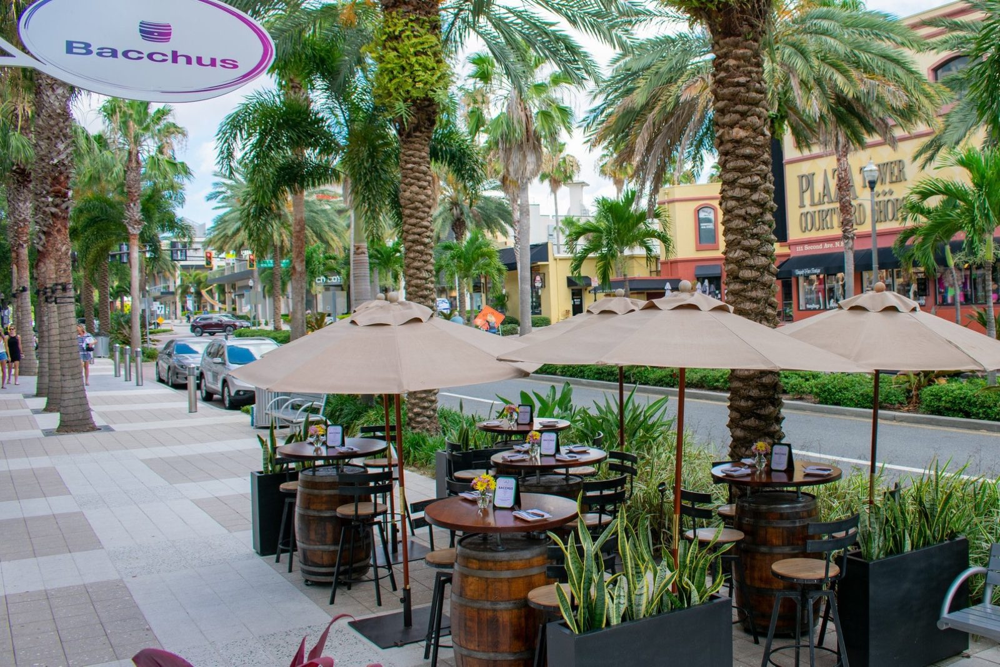
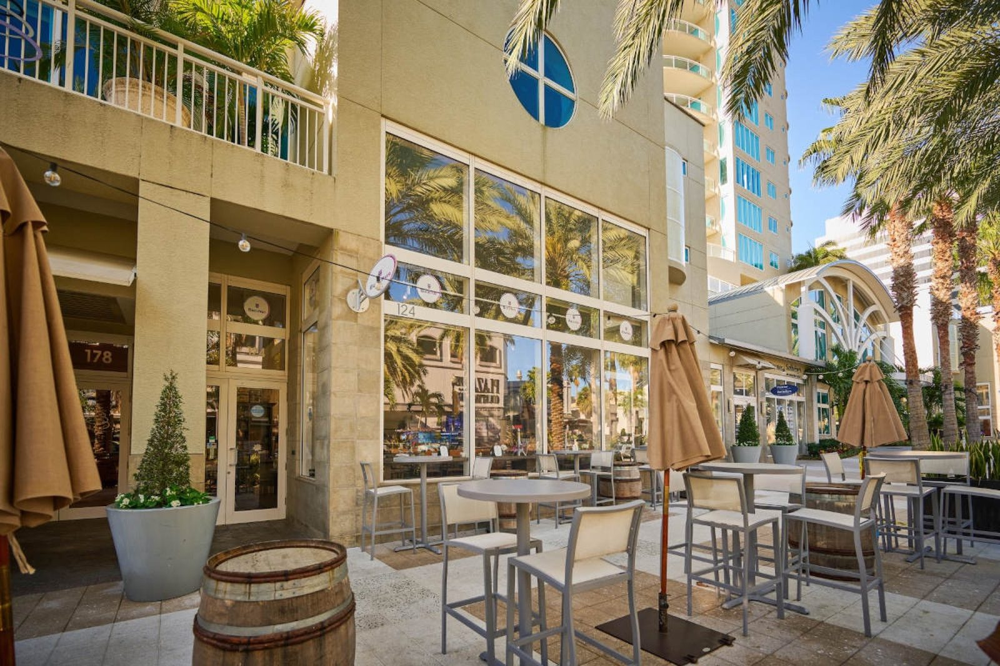
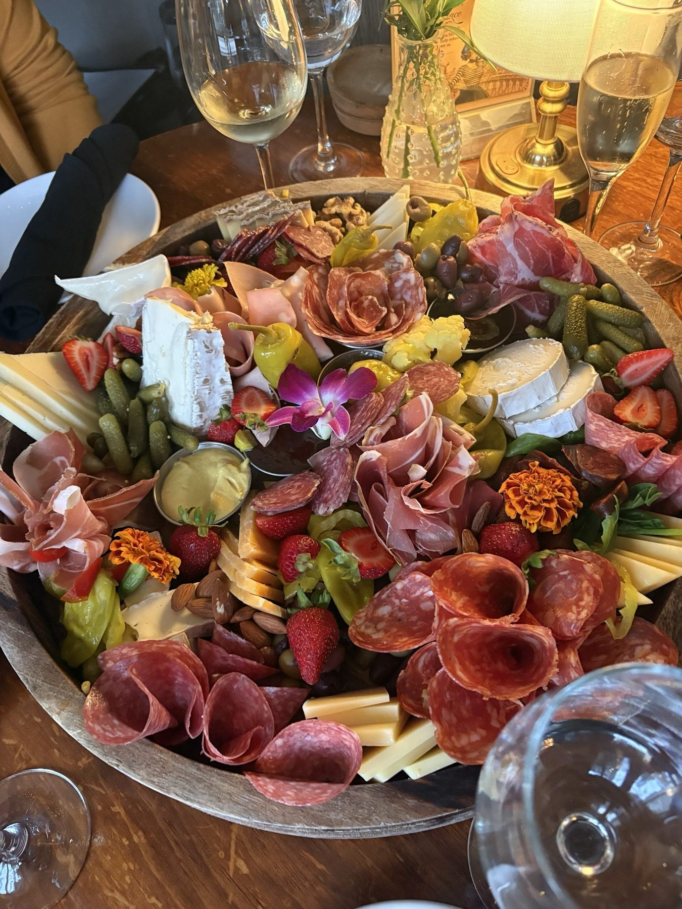
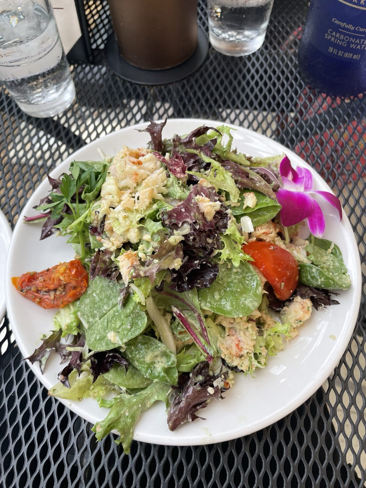
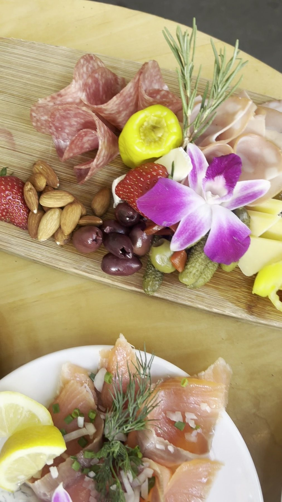
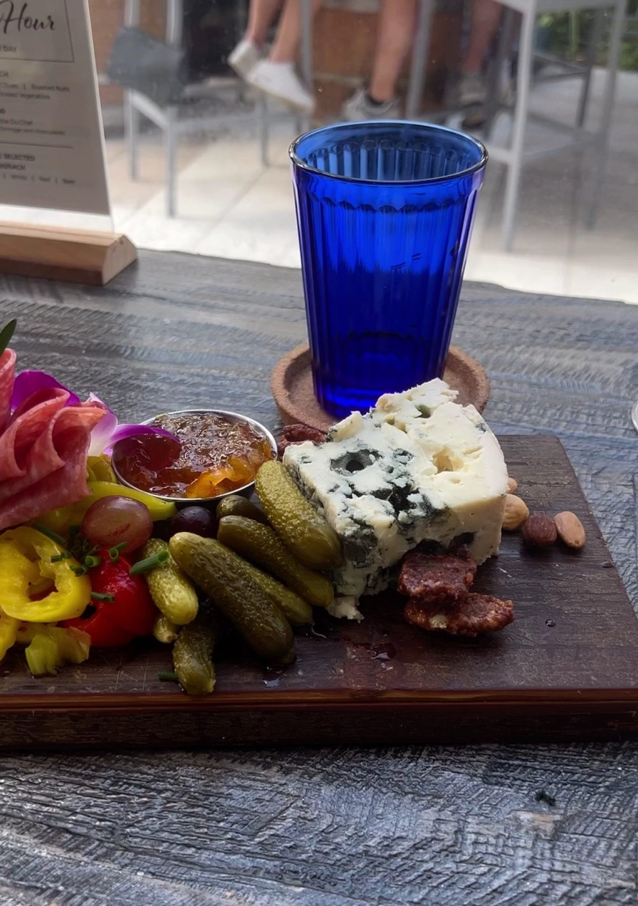
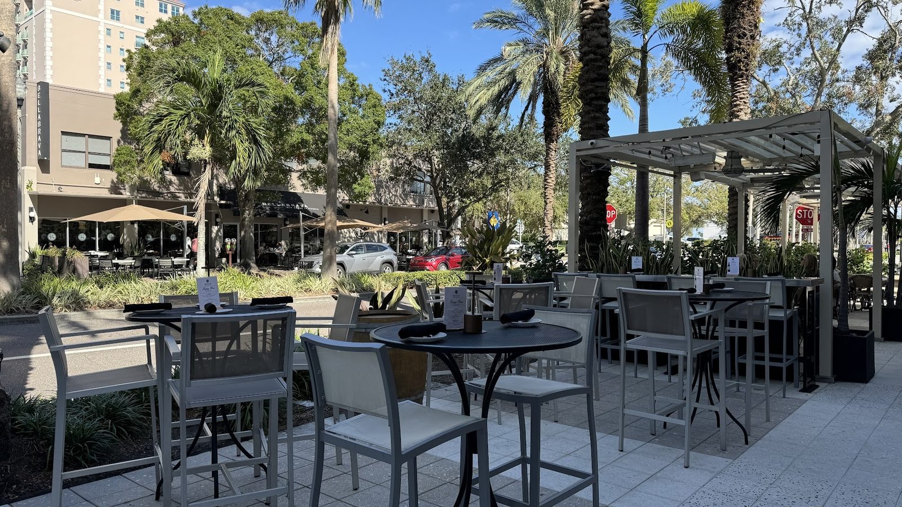
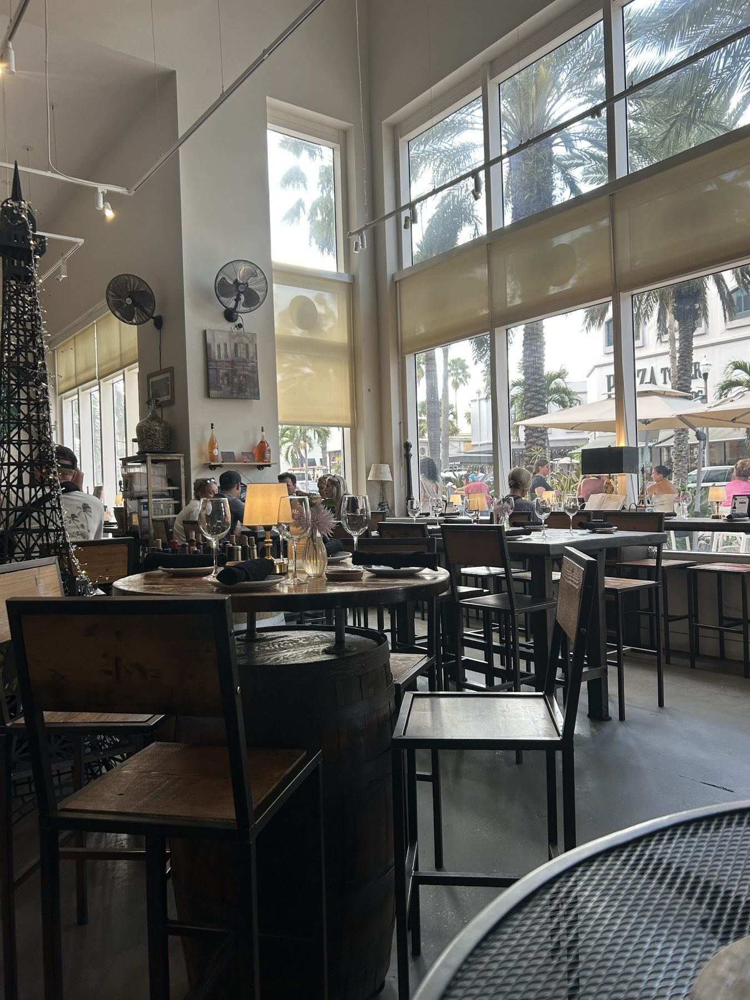

Charcuterie and cheese
Cheeses and cured meats. Build a planche, or order a board for the table.
French wine bistro · St. Petersburg, FL

124 2nd Ave NE, St. Petersburg, FL 33701
Nearly 100 wines, charcuterie boards and a sidewalk patio on 2nd Ave NE.
What to order
Boards, plates and a glass.
Cheeses and cured meats. Build a planche, or order a board for the table.

French onion soup, foie gras torchon, tuna carpaccio and steak flatbread.

Wine, imported beer and wine-based cocktails. Happy hour 3 to 6 PM.






4.7 ★ · 778 Google reviews
Stopped by for some pre-dinner drinks and an appetizer. The wine and food was incredible. Their happy hour is really good. Our server Brianna was also very attentive and knowledgeable. Highly recommend if you're a wine and charcuterie lover.
We stumbled in here randomly and were so pleasantly pleased at the caliber of the food and the experience. We split the lobster salad and grilled cheese (very unique and different, but delicious). Everything was perfection, and I could have that lobster salad every single day. We can’t wait to be back to try more. Our server, Ricky, was also awesome!
Delicious flat breads. The hostess was very pleasant and very caring. Enjoyed every bit. Got the French onion soup - which normally I will never order in hot weather - but was still light broth and delicious.

Our story
A relaxed oasis of Old World charm, nestled in St. Pete's growing downtown.
The wine library is watched over by the Vitale Bros' Bacchus mural. The menu changes with the seasons.
Visit
124 2nd Ave NE, St. Petersburg, FL 33701
Happy hour 3 to 6 PM. We recommend booking ahead.